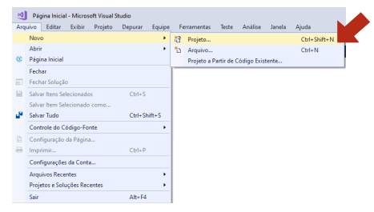
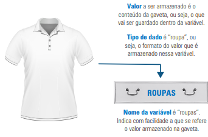

Quando precisamos armazenar dados temporários em programas, usamos variáveis. No entanto, quando há muitos valores relacionados (como notas de vários alunos), criar várias variáveis individuais se torna trabalhoso e sujeito a erros. Para resolver isso, utilizamos os vetores, que permitem armazenar diversos valores do mesmo tipo em uma única estrutura.
O desenvolvimento será feito na linguagem C#, utilizando um IDE (Ambiente de Desenvolvimento Integrado). A recomendação é o Microsoft Visual Studio Community, que pode ser baixado gratuitamente.
Para cada programa, cria-se um novo projeto em: Arquivo > Novo > Projeto...
A estrutura inicial do código não deve ser alterada. Todos os programas devem ser escritos entre as chaves do
método
Main. A linha padrão Console.WriteLine("Hello World!"); pode ser apagada.
Para rodar o código, basta usar a tecla de atalho Ctrl + F5.
Veja o seguinte vídeo para melhor entendimento sobre vetores: link
Também é possível usar IDEs online, como Replit e .NET Fiddle.
Uma variável pode ser comparada a uma gaveta que armazena um valor específico. Já um vetor é como um gaveteiro, com várias gavetas do mesmo tipo, onde cada posição é identificada por um índice (que começa em 0).
Os valores armazenados em variáveis e vetores dependem do tipo de dado definido. Alguns dos principais tipos primitivos em C# são mostrados na tabela abaixo:
| Descrição | Representação em C# | Valores possíveis |
|---|---|---|
| Inteiro | int |
-2.147.483.648 até 2.147.483.647 |
| Inteiro longo | long |
-9.223.372.036.854.775.808 até 9.223.372.036.854.775.807 |
| Decimal | double |
±5.0 × 10-324 até ±1.7 × 10308 |
| Caractere | char |
Unicode UTF-16 (U+0000 até U+FFFF) |
| Lógico | bool |
true ou false |
No momento da criação, já é possível atribuir todos os valores:
double[] notas = {8.7, 5.4, 6.2};
Primeiro define-se o tamanho, depois os valores são atribuídos:
double[] notas = new double[3];
Primeiro declara-se o vetor, depois define-se o tamanho em outro ponto do código:
double[] notas; notas = new double[3];
O tamanho também pode ser definido dinamicamente com base em valores fornecidos pelo usuário.
Vetores são úteis para realizar operações sobre todos os elementos. Exemplo: cálculo da média de notas.
Versão inicial (cálculo direto com índices fixos):
double[] notas = {8.7, 5.4, 6.2};
double media = (notas[0] + notas[1] + notas[2]) / 3;
Versão com laço for, permitindo percorrer qualquer vetor:
double soma = 0;
for (int i = 0; i < notas.Length; i++)
soma += notas[i];
double media = soma / notas.Length;
Exemplo completo: leitura das notas digitadas pelo usuário e cálculo da média.
Console.WriteLine("Defina quantos alunos há na turma:");
int tamanho = int.Parse(Console.ReadLine());
double[] notas = new double[tamanho];
// Armazenando as notas
for (int i = 0; i < notas.Length; i++) {
Console.WriteLine("Digite a nota do aluno " + (i + 1) + ":");
notas[i] = double.Parse(Console.ReadLine(), CultureInfo.InvariantCulture);
}
// Recuperando as notas para calcular a média
double soma = 0;
for (int i = 0; i < notas.Length; i++) {
Console.WriteLine("Nota do aluno " + (i + 1) + ": " + notas[i]);
soma += notas[i];
}
double media = soma / notas.Length;
Console.WriteLine("Média das notas na turma é: " + media);
O uso de laços for é fundamental para percorrer vetores, seja para preenchê-los, seja para recuperar
seus valores.
Vetores podem ser usados como parâmetros e também como retorno de funções.
static double calcularMedia(double[] notas) {
double soma = 0;
for (int i = 0; i < notas.Length; i++)
soma += notas[i];
return soma / notas.Length;
}
static void inverterVetor(double[] vetor) {
double temp;
for (int i = 0; i < vetor.Length/2; i++) {
temp = vetor[i];
vetor[i] = vetor[vetor.Length - 1 - i];
vetor[vetor.Length - 1 - i] = temp;
}
}
Atenção: em C#, quando copiamos um vetor, copiamos apenas a referência na memória. Se quisermos criar uma cópia independente, precisamos copiar valor a valor:
double[] notas = { 8.7, 5.4, 6.2 };
double[] n = new double[notas.Length];
for (int i = 0; i < notas.Length; i++)
n[i] = notas[i];
for junto de vetores para preencher ou percorrer seus elementos.Pratique criando vetores de diferentes tipos, manipulando-os com funções e testando cópias, para reforçar sua habilidade em programação.
{% include nav-aula.html materia="algoritmoseprogramacao2" aula="2" %} {% include footer.html %}